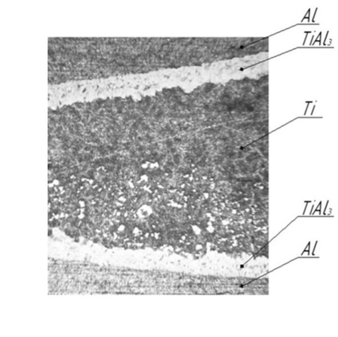

Разработка легких высокопрочных композиционных материалов нового типа
Макроструктура композита после сварки взрывом

Микроструктура композита после термической обработки

Проект реализован при поддержке Фонда содействия инновациям в рамках программы «Студенческий стартап» мероприятия «Платформа университетского технологического предпринимательства» федерального проекта «Технологии».

